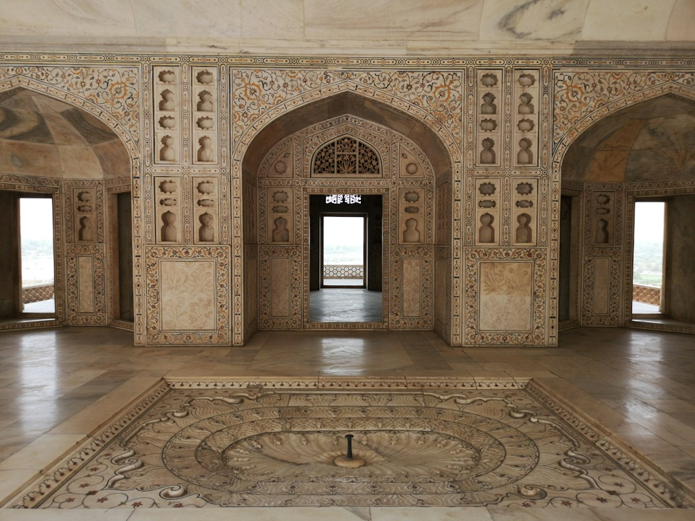
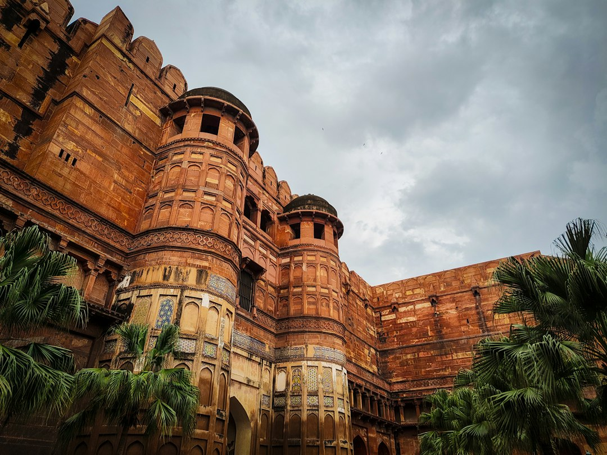
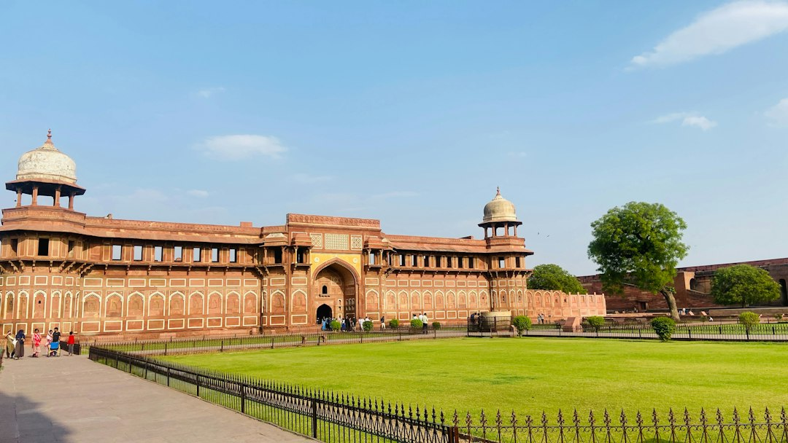
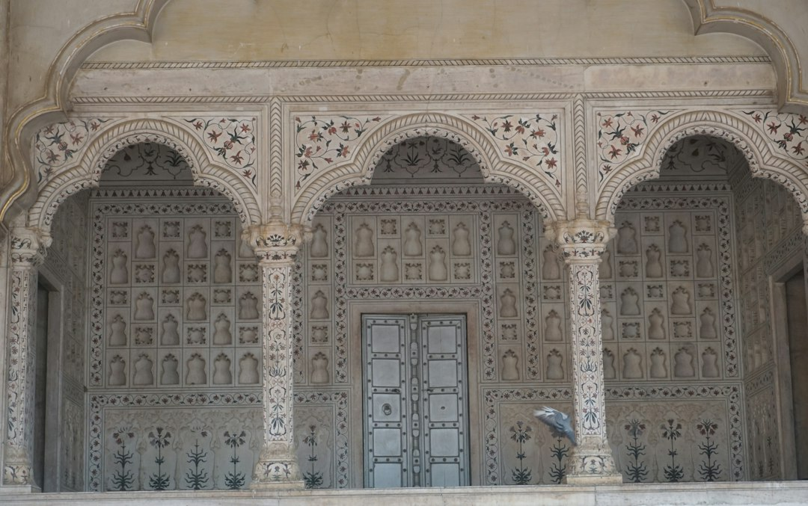
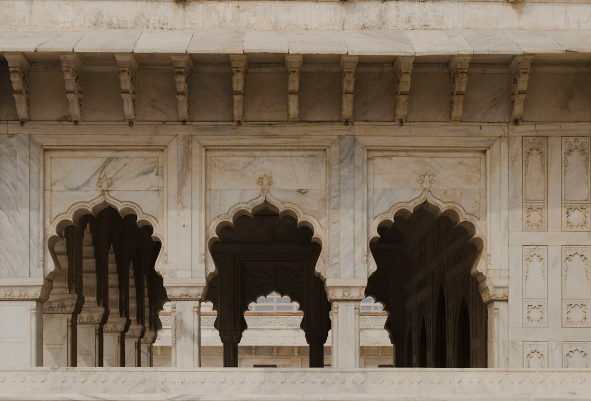
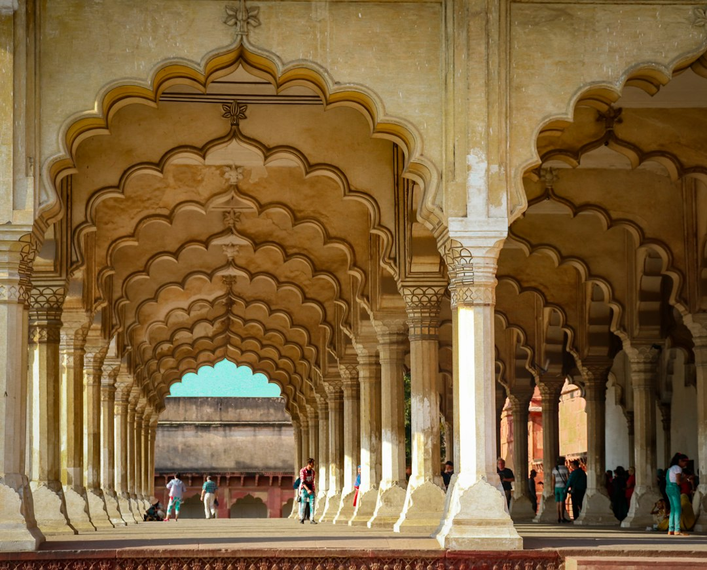
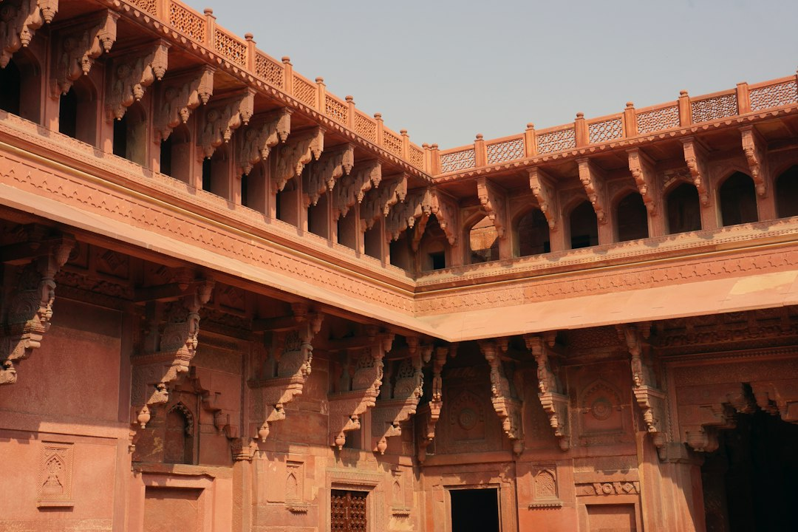

📍 Location: Agra, Uttar Pradesh, India — on the western bank of the Yamuna River, roughly 2.5 km northwest of the Taj Mahal
📅 Period: 16th–17th centuries CE (with earlier 11th-century foundations; later British military occupation)
🏷️ Category: Cultural
⚠️ Status: UNESCO World Heritage Site (inscribed 1983)
📏 Significance: One of the finest surviving Mughal palatial fortresses; a synthesis of Hindu and Islamic architecture; the seat of the Mughal empire at its zenith; the prison of Shah Jahan in his final years
The first thing you notice is not a building. It is a wall. It runs along the river for more than two kilometres, doubles back on itself, and closes into a circuit nearly a kilometre and a half around. It is built of dressed red sandstone, cut into blocks so regular that the joints almost disappear, and it rises at points to twenty-one metres above the plain. From the riverbank at dawn, when the mist still hangs over the Yamuna and the domes of the Taj Mahal glow faintly downstream, Agra Fort looks less like a monument than like a small country that has decided to sit very still.

Most visitors arrive expecting a prelude to the Taj Mahal. They leave having found something stranger and more complicated. The Taj is a single perfected gesture, a mausoleum built to be looked at. Agra Fort is a lived-in thing, a walled city that served as the capital of the Mughal empire at its height, then as its prison, then as a British garrison, then as an army depot, and only later as a monument. It has been a fortress, a palace, a treasury, a court, a jail, and a barracks. It has never been only one thing.
The fort is entered today, as it was in Mughal times, through the Amar Singh Gate on the southern side. The gate is a zigzag: you approach, you turn, you approach again. Elephants could not charge a straight line through it, and neither could cavalry. Above the gate, the sandstone is carved with a row of small arched niches and a band of geometric tilework, and the whole structure leans slightly inward, so that a defender on the parapet could drop stones straight down onto anyone pressed against the base of the wall. This is architecture as a set of decisions about who gets in and who does not.
Beyond the gate, the noise of Agra falls away with startling speed. The tourist hawkers, the auto-rickshaws, the men selling marble inlay and bottled water — all of it stops at the threshold. Inside, there are lawns, and peacocks, and long gravel paths, and a silence that feels deliberate. You are standing in the courtyard of a fortress that once held an empire's treasury, its harem, its throne, and its emperor. The scale is human, but the ambition is not.
The site's history begins long before the Mughals. A fortification of some kind stood here by the 11th century, when the Chauhan Rajputs held the region. The 16th-century chronicler Abu'l-Fazl, writing in the Ain-i-Akbari, records that the fort was originally built of brick and known as Badalgarh, and that it had passed through many hands — Rajput, then Lodi, then Mughal — before it came to Babur, the founder of the Mughal dynasty, after the First Battle of Panipat in 1526. Babur took Agra and made it his first Indian capital. He lived in the old fort, complained about the heat, laid out a garden, and died before he could rebuild much of anything.


The transformation came with Akbar, Babur's grandson, who ascended the throne in 1556 and moved the imperial capital to Agra in 1558. Akbar was a builder on an imperial scale, and he decided that the old brick fort was unworthy of a dynasty that now ruled most of northern India. In 1565 he ordered it rebuilt in red sandstone, and over roughly eight years — the work is generally dated to 1565–1573, with additions continuing for decades — the fort was remade. The old brick core was encased in the new stone. The walls were thickened and heightened. The gates were rebuilt as fortifications. Inside, palaces, courtyards, baths, and audience halls were laid out on a plan that would be extended and refined by Akbar's successors.
Akbar's fort was not merely a military structure. It was the seat of government, the imperial residence, and a statement about the nature of Mughal rule. Akbar was famously interested in the synthesis of cultures — he married Rajput princesses, appointed Rajput generals, and presided over a court where Persian, Central Asian, and Indian traditions met. The architecture of the fort reflects this. The buildings of Akbar's phase show a distinctive blend: the trabeated construction of Hindu temple architecture, with beams and brackets rather than arches, combined with the Islamic vocabulary of domes, minarets, and calligraphic bands. The result is neither purely Persian nor purely Indian. It is Mughal, and it is the earliest large-scale expression of that style.
Akbar's son Jahangir, who ruled from 1605 to 1627, continued the work. Jahangir was a connoisseur of painting and pleasure, and his additions to the fort are lighter and more decorative than his father's. But the fort's greatest patron was Jahangir's son, Shah Jahan, who ruled from 1628 to 1658. Shah Jahan had been born in the fort, and he returned to it as emperor with the sensibility of a man who had already built the Taj Mahal's predecessor, the tomb of his grandfather Akbar at Sikandra. Under Shah Jahan, the fort was transformed from a sandstone fortress into a white marble palace. He demolished some of Akbar's buildings and replaced them with structures of marble inlaid with semi-precious stones — the same pietra dura technique used at the Taj. The imperial apartments, the private audience hall, the mosque, and the riverside terraces all date largely to his reign.
Then came the crisis. In 1658, Shah Jahan fell ill, and his sons went to war over the succession. Aurangzeb emerged victorious, deposed his father, and confined him — according to the most enduring tradition — in the fort itself, in a room in the Musamman Burj, a tower with a view of the Taj Mahal. Shah Jahan is said to have spent the last eight years of his life there, attended by his daughter Jahanara, looking across the river at the tomb he had built for his wife. He died in 1666. The fort, which had been the stage of the dynasty's greatest triumph, became the setting of its most intimate tragedy.
After Shah Jahan, the fort's history is a long decline. Aurangzeb moved the court south, to the Deccan, and Agra lost its centrality. The empire fragmented. In the 18th century the fort was taken and retaken — by the Jats, by the Marathas, by the British. In 1803 the British East India Company took Agra, and from then on the fort served as a garrison and administrative centre. The British demolished some buildings and converted others to military use. The great courtyards became parade grounds. Some of the Mughal structures were lost entirely; others were altered beyond easy recognition. It was not until the 20th century, and especially after Indian independence in 1947, that the fort was recognised as a monument and the work of conservation began.
To walk through Agra Fort is to move through layers of time. The buildings inside fall into two broad groups: the red sandstone structures of Akbar's reign, concentrated in the southern and eastern portions, and the white marble palaces of Shah Jahan, which dominate the river-facing northern side. The contrast is not just one of colour. Akbar's buildings are robust, masculine, and structurally inventive, with wide bays and deep shaded verandahs. Shah Jahan's are refined, delicate, and almost weightless, with slender columns, cusped arches, and surfaces that seem to have been embroidered rather than built.


The first major structure inside the Amar Singh Gate is the Jahangiri Mahal, despite its name generally attributed to Akbar's reign. It is the largest surviving palace building in the fort, a two-storey sandstone complex arranged around a courtyard. Its exterior is relatively plain, but the interior is extraordinary: brackets carved with elephant heads, beams supported on ornate pillars, and a ceiling of interlocking stone slabs that demonstrates the trabeated technique at its most sophisticated. The Jahangiri Mahal is one of the best surviving examples of the hybrid style that Akbar's architects developed, and it repays slow looking. The stone is not merely structural; it is carved into patterns that echo woodwork and textile design.
North of the Jahangiri Mahal lies the Khas Mahal, the private palace of Shah Jahan, built of white marble and facing the river. It is a small building — three rooms and a verandah — but it is one of the most perfect interiors in Mughal architecture. The walls are inlaid with floral motifs in coloured stone, the ceilings are painted with gold and lapis, and the arched openings frame the river and the Taj Mahal beyond. The Khas Mahal was the emperor's private retreat, and its scale is deliberately intimate. It is a place for a ruler to be alone, or nearly alone, and its beauty is the beauty of something made for a single person's pleasure.
Adjacent to the Khas Mahal are the Anguri Bagh, a formal garden divided into geometric quarters, and the Sheesh Mahal, a small palace of mirrors. The Sheesh Mahal's interior is covered in tiny convex mirrors set into plaster, so that a single lamp becomes a room full of light. It is a technique of Persian origin, and it survives here in a state that is fragmentary but still astonishing. Nearby is the Musamman Burj, the octagonal tower where Shah Jahan was confined. It projects from the wall over the river, and its marble screens are carved so finely that the stone looks like lace. From its terrace, the Taj Mahal is visible across the bend of the Yamuna — close enough to be recognised, far enough to be a memory.
The Diwan-i-Aam, the Hall of Public Audience, is a vast open pavilion of red sandstone where the emperor received petitions and dispensed justice. Its scale is deliberately different from the private palaces: this is a building for crowds, with a raised throne alcove and a wide courtyard. The Diwan-i-Khas, the Hall of Private Audience, is smaller and more precious, built of marble and once home to the Peacock Throne, the jewel-encrusted seat of the Mughal emperors that Shah Jahan commissioned and that was later carried off to Persia by Nadir Shah. The throne is gone; the hall remains, and its inlaid walls and cusped arches still convey the intimacy of power.
The Moti Masjid, the Pearl Mosque, sits nearby, a small white marble mosque built by Shah Jahan for his personal use. Its courtyard is enclosed, its dome is modest, and its interior is a study in restraint. It is one of the finest small mosques in India, and it is easy to miss amid the larger buildings. The Nagina Masjid, the Jewel Mosque, is another marble prayer hall, built for the women of the court.
Beyond the palaces, the fort's defensive architecture is itself a marvel. The walls are built of sandstone blocks laid in a system of interlocking courses, with a rubble core, and they are punctuated by bastions and loopholes. The fort has two main gates: the Amar Singh Gate, used today, and the Delhi Gate, which faces the city and was the ceremonial entrance in Mughal times. The Delhi Gate is closed to visitors, but its outer façade, with its band of tilework and its great arch, can be seen from the road. The fort's water system — wells, channels, and cisterns — was designed to supply a population of thousands, and parts of it are still visible.
Agra Fort was not a museum. It was a working capital, and at its height it housed an entire court — the emperor, his family, his nobles, his servants, his soldiers, and the thousands of people who kept the machinery of empire running. The fort was a city in miniature, with its own water supply, its own markets, its own workshops, and its own law. The emperor's day was structured by ritual: audiences, prayers, meals, and the constant flow of petitions and reports. The buildings of the fort were designed around this rhythm, with public halls for the day's business and private palaces for the night's rest.


The harem, the women's quarters, was a substantial part of the fort's life. Mughal princesses and queens were not merely secluded; they were educated, politically active, and often patrons of architecture and literature. Jahanara, Shah Jahan's daughter, was a poet and a builder in her own right, and she remained with her father during his imprisonment. The fort's layout reflects the separation of public and private space, with the river-facing palaces reserved for the imperial family and the outer courtyards for the court.
The fort was also a treasury and an arsenal. It held the imperial jewels, including the Peacock Throne, and it stored weapons and provisions for the army. Its granaries and magazines were designed to withstand siege. The combination of palace and fortress is not a contradiction; it is the logic of Mughal rule, in which the emperor's person and the empire's power were inseparable.
Agra Fort was inscribed as a UNESCO World Heritage Site in 1983, recognised for its outstanding universal value as a masterpiece of Mughal architecture and as a testimony to the civilisation of the Mughal empire. It is one of the most visited monuments in India, drawing millions of visitors each year, and it sits at the centre of a city that is itself a monument — Agra's Mughal heritage includes the Taj Mahal, the tomb of Akbar at Sikandra, and the abandoned city of Fatehpur Sikri nearby.
But the fort faces serious challenges. The most persistent is environmental. Agra's air quality is among the worst in India, and the same pollutants that discolour the Taj Mahal's marble also attack the fort's sandstone and marble. Sulphur dioxide and particulate matter from vehicles and industry settle on the stone and combine with moisture to form gypsum crusts, which flake and pit the surface. The Archaeological Survey of India, which manages the site, has undertaken conservation work, including the application of protective coatings and the cleaning of affected surfaces, but the problem is regional and cannot be solved at the level of a single monument.
A second challenge is water. The Yamuna River, which once formed the fort's western boundary and filled its moats, is now heavily polluted and reduced in flow. The river's degradation affects the fort's foundations and the broader landscape of the site. Conservationists have argued for years that the fort cannot be preserved in isolation from the river and the city around it.
A third challenge is visitor pressure. The fort's courtyards and palaces were not designed for millions of people, and the wear on floors, steps, and carved surfaces is visible. The site's management has to balance access with preservation, and the balance is not always easy to strike.
There are also subtler challenges. The fort's history is layered, and not all of it is comfortable. The British military occupation altered the site in ways that are still being understood, and some of the buildings that were demolished or converted have left gaps in the record. Conservation is not only a matter of cleaning stone; it is a matter of deciding what to preserve and what to let go.
For the people of Agra, the fort is not only a monument. It is a landmark, a place of work, and a point of pride. The city's economy is built around tourism, and the fort is one of its anchors. Guides, vendors, rickshaw drivers, and hoteliers all depend on the flow of visitors. The fort's presence shapes the city's geography: the roads that lead to it, the markets that cluster near its gates, the views that open unexpectedly from rooftops and terraces.
The fort is also a place of memory. For many Indians, it is a symbol of the Mughal past — a past that is celebrated, contested, and sometimes politicised. The fort's association with Shah Jahan's imprisonment gives it a particular emotional charge, a story of power and loss that resonates beyond the details of history. Visitors who stand in the Musamman Burj and look across the river at the Taj Mahal are participating in a narrative that has been told for centuries.
And the fort is a place of ordinary life. On any given morning, you will see schoolchildren on field trips, families on holiday, couples taking photographs, and elderly men sitting on the lawns in the shade. The peacocks that live in the fort's gardens are as much a part of the place as the marble palaces. The fort is a monument, but it is also a park, a viewpoint, and a gathering place. Its walls enclose a history, but they also enclose a present.
Agra Fort is one of the great architectural achievements of the Mughal empire, and one of the most complete surviving examples of a Mughal palace-fortress anywhere in the world. Its red sandstone walls enclose a complex of buildings that span the reigns of Akbar, Jahangir, and Shah Jahan, and that together trace the development of Mughal architecture from its robust early phase to its refined maturity. The fort is significant not only for its individual buildings — the Jahangiri Mahal, the Khas Mahal, the Diwan-i-Aam, the Moti Masjid — but for the way they work together as a single, coherent ensemble. It is a place where architecture, politics, and daily life were designed as one.
Its history is also a history of the Mughal empire itself: the consolidation of power under Akbar, the cultural flowering under Jahangir and Shah Jahan, and the decline that followed. The fort's most famous story — the imprisonment of Shah Jahan in the Musamman Burj, within sight of the Taj Mahal — has become a kind of parable about the relationship between power and beauty, and it has given the site an emotional resonance that few monuments can match.
The fort's legacy is not only architectural. It is a reminder of the cultural synthesis that shaped Mughal India, and of the ways in which different traditions — Persian, Central Asian, Rajput, and Indian — were brought together to create something new. In a country that is still negotiating the meaning of its past, the fort is a place where that negotiation can be seen in stone. It is also a place where the past is not sealed off from the present: the fort is a living part of Agra, and its future depends on the city around it.
To visit Agra Fort is to be reminded that monuments are not only things to be looked at. They are things that have been lived in, fought over, altered, and loved. The fort has been a palace and a prison, a barracks and a museum, and it is still becoming something. Its walls have held an empire, and they still hold a story. For anyone interested in the Mughal world, the fort is not a prelude to the Taj Mahal but a companion to it — the place where the people who built the Taj actually lived. Readers who want to explore further might begin with our guides to Fatehpur Sikri, Akbar's abandoned capital, and Humayun's Tomb, the Mughal garden tomb that preceded the Taj. The story of the dynasty is a story of buildings, and Agra Fort is one of its central chapters.
Q1: What is Agra Fort known for?
Agra Fort is known as one of the finest surviving Mughal palace-fortresses in India, a UNESCO World Heritage Site, and the seat of the Mughal empire under Akbar, Jahangir, and Shah Jahan. It is famous for its red sandstone walls, its white marble palaces, and its association with Shah Jahan's imprisonment.
Q2: When was Agra Fort active/important?
The site was fortified from at least the 11th century, but it became a major imperial centre after Akbar rebuilt it in red sandstone from 1565. It remained the Mughal capital at intervals until the early 17th century, and it was later a British garrison. It was inscribed as a UNESCO site in 1983.
Q3: Is Agra Fort a UNESCO World Heritage Site?
Yes. It was inscribed in 1983 under the cultural criteria of the World Heritage Convention.
Q4: How can one visit Agra Fort?
The fort is in Agra, Uttar Pradesh, about 200 km from Delhi. It is reached by road, rail, and air (Agra has a small airport, and Delhi's airports are the main international gateways). The main entrance is the Amar Singh Gate. Tickets can be bought at the gate or online, and guided tours are available.
Q5: What are the biggest threats facing Agra Fort today?
Air pollution, water pollution and reduced flow in the Yamuna, visitor pressure, and the broader pressures of urban development in Agra. Conservation is managed by the Archaeological Survey of India.
| Detail | Information |
|---|---|
| Nearest City | Agra, Uttar Pradesh, India |
| Access | 200 km from Delhi by road or rail; Agra Cantt railway station; auto-rickshaw or taxi to the Amar Singh Gate |
| Best Season | October to March (cooler, clearer weather) |
| Current Status | Open to visitors; some areas restricted |
| Permissions | Standard entry ticket; no special permit for the main areas |
| Site Museum | Small museum within the fort complex |
| Advisory | Avoid midday heat; allow 2–3 hours; wear comfortable shoes; photography permitted in most areas |
| Fact | Detail |
|---|---|
| Site Name | Agra Fort |
| Location | Agra, Uttar Pradesh, India |
| Category | Cultural |
| UNESCO Status | World Heritage Site |
| Year Inscribed | 1983 |
| Main Period(s) | 16th–17th centuries CE (Mughal); earlier 11th-century foundations |
| Primary Significance | Mughal palace-fortress; synthesis of Hindu and Islamic architecture; seat of the Mughal empire |
| Key Features | Red sandstone walls, Jahangiri Mahal, Khas Mahal, Diwan-i-Aam, Diwan-i-Khas, Moti Masjid, Musamman Burj |